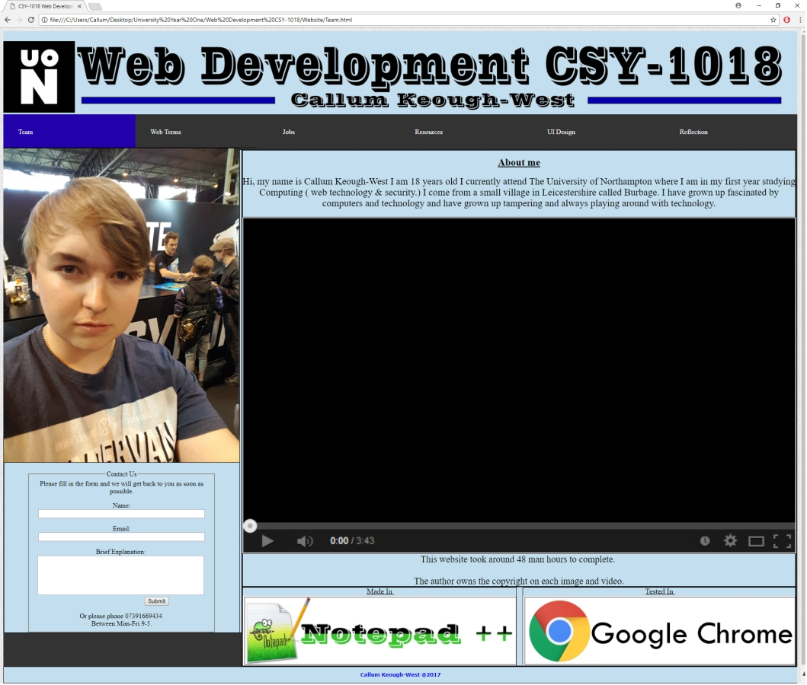

Learning Web Development
Through out learning web development I have learned many new skills and new techniques that will help with my progression
in website developing and are skills that I can carry with me through out my future career.
When working on this project I seeked help from people who I haven't known before. This helped me as I was able to get the
opinion off different people who have different views on what looks good.
I have learnt many new techniques having already created basic websites in school and so by building this project I have
learned different ways of doing things through trial and error and messing around with what I already knew.
During the teaching of this course we learned about Cascading Style Sheet's this was an interesting lesson because I
learned a new way of styling the website without filling up the HTML section with uneccessary extra. The CSS helped as I
was able to learn that it can be linked to the website and it looks cleaner than fitting it in with the HTML.
I learned how to add videos to the webpage and embedded them properly making sure they look correct on the page. This also came
with lessons on making an an image look correct and make sure that they are sized correctly. Because if the proportion is off
the user will notice because the image wouldn't look right sat on the page and could even be distorted.
This website has been made from the teaching of the course and so alot of the elements within the page have been made from lessons
learned on the web development course. This is from the positioning of the page to the navigation bar and the lessons on the CSS
gave me a lot of ideas on the style that I wanted the website to be. The way the images are a decent size and the way they are layed
out and each have their own styles.